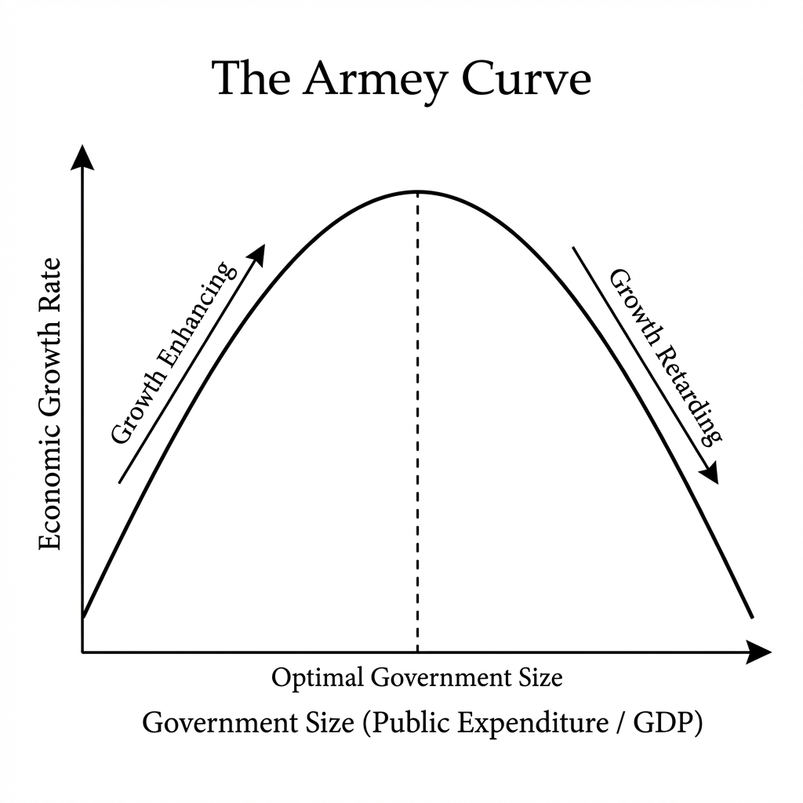
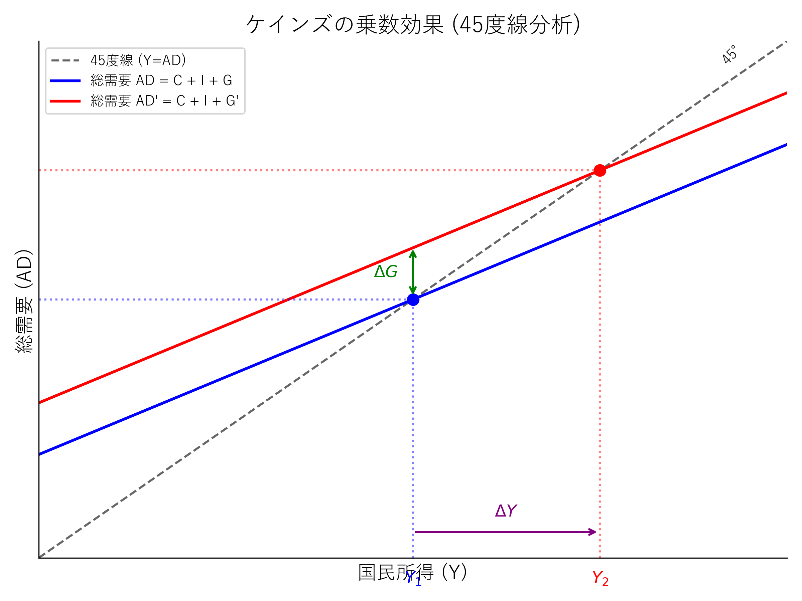
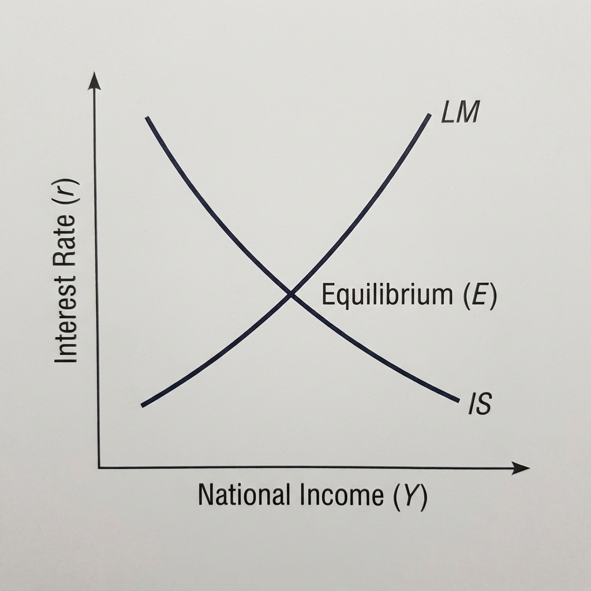
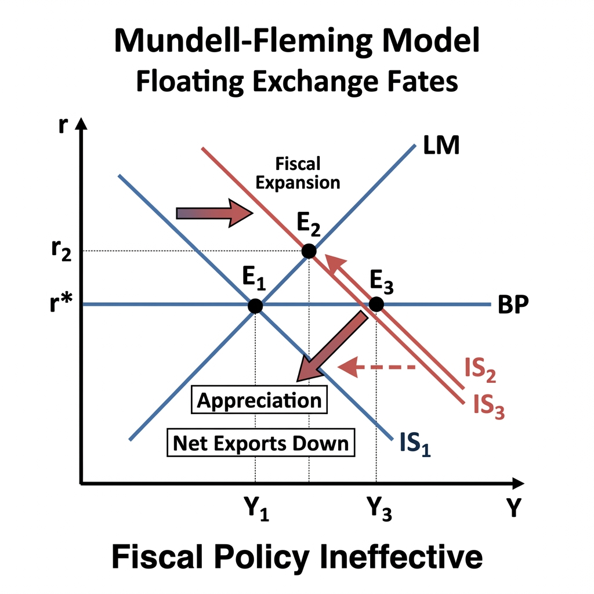

本ドキュメントは、財政学Bの講義内容を物語形式でまとめたものです。
(参考資料: 第1講義.pdf)
財政（Public Finance）とは、政府が公共の需要を満たすために、資金を強制的に調達（課税）、管理、そして支出する活動のことを指します。私たちが普段生活している「市場経済」は、個別の対価を支払って財やサービスを得る「自発的な交換」に基づいています。これに対し、財政は「強制獲得経済」と呼ばれ、対価と給付が必ずしも個別に対応せず、強制力（課税権など）を伴う点が決定的に異なります。
マスグレイブによれば、財政には主に3つの機能があります。 第一に資源配分機能です。これは、国防や警察などの公共財を供給したり、公害などの外部性の問題に対処するなど、市場の失敗を補完する機能です。 第二に所得再分配機能です。市場経済によって生じた所得格差を、累進課税や社会保障給付を通じて是正し、公平性を保つ役割を果たします。 第三に経済安定化機能です。景気変動を平準化するフィスカル・ポリシーや、長期的な経済成長を促進する働きのことです。
財政に対する考え方は、時代とともに変化してきました。 アダム・スミスの時代の古典派は、「安価な政府」や「夜警国家」を理想とし、政府の介入は最小限にとどめるべきだとする均衡財政主義を唱えました。 一方で、ドイツで発展したドイツ財政学（官房学）は、「国家有機体説」に基づき、国家を個人よりも上位の存在と捉え、国家主導の経済運営を正当化しました。 これらに対し、近代経済学的財政学は、「機械論的国家観」に立ち、政府をあくまで個人の幸福（厚生）を最大化するための手段、いわば「慈悲深い専制君主」として位置づけました。 しかし、ブキャナンに代表される公共選択学派は、政治家や官僚もまた自分の利益（得票数や予算の最大化）を追求する「利己的な経済人」であると指摘しました。彼らは、政府が無秩序に肥大化していく「リヴァイアサン」となる危険性を警告しています。
(参考資料: 第2講義.pdf)
「政府」と一口に言っても、その範囲は様々です。「一般政府」と言った場合は、中央政府、地方政府、そして社会保障基金を合わせたものを指します。これに公庫や公営企業などの公的企業を加えたものが、広い意味での「公的部門」となります。
政府の経費は、その性質によって大きく二つに分けられます。一つは移転的経費で、社会保障給付や補助金、国債の利払いなどがこれにあたります。これらは受け取り手からの直接の対価（財・サービス）を伴わない支出であり、近年増加傾向にあります。もう一つは非移転的経費で、公共サービスや公共事業のように、政府が実際にモノやサービスを購入する支出のことです。
経済が発展するにつれて、政府の支出や規模は拡大していく傾向にあります。これにはいくつかの法則や理論が提唱されています。 ワグナーの法則は、経済が豊かになると、文化や福祉への需要が高まり、政府支出が増えるという説です。 転位効果（ピーコック＆ワイズマン）は、戦争などの危機的な状況で一度許容された高い税負担が、平和に戻った後も維持され、支出が高止まりする現象を説明します。 また、ボーモルの不均等成長（ボーモル病）は、製造業に比べて公共サービス部門は生産性が上がりにくいため、相対的にコストが増大するという説です。 さらに、財政錯覚という考え方もあります。これは、間接税や国債発行によって財源が調達されると、国民が実際の負担を安く見積もってしまい、結果として過大な公共サービスを要求してしまう現象です。
アーミー・カーブは、政府支出と経済成長の関係を示したものです。政府支出はある程度までは経済成長を助けますが、行き過ぎると民間の活力を奪い、逆に成長率を下げてしまうことを示唆しており、その形状は逆U字型になります。

(参考資料: 第3講義.pdf)
日本の財政は、憲法83条に基づく「財政民主主義」の下で運営されています。これは、課税や支出には国民の代表である国会の議決が必要であるという原則です。 予算の作成・運用には、全ての収支を網羅する「完全性」や、分かりやすくする「明瞭性」など、いくつかの原則が求められます。
日本の予算は大きく3つに分かれています。国の基本的な活動を賄う一般会計予算、特定の事業を行うために経理を分けた特別会計予算、そして日本政策金融公庫などの政府関係機関予算です。
予算編成は、まず各省庁が概算要求を出すことから始まります。これを財務省が査定し、削られた分を各省庁が復活折衝で交渉します。最終的に閣議決定された予算案が国会に提出され、審議・議決されます。なお、予算については衆議院に先議権と優越権が認められています。
graph LR
A[概算要求<br>(各省庁)] --> B[財務省査定]
B --> C[復活折衝]
C --> D[閣議決定]
D --> E[国会審議]
予算が成立して執行された後は、目的外の使用は原則禁止されますが、移用や流用といった例外措置もあります。年度が終わると決算が行われ、会計検査院の検査を受けた後に国会へ提出されます。
経済は山と谷を繰り返す景気循環の中にあります。実際のGDPと、経済の実力をフルに発揮した時の潜在GDPとの差を「需給ギャップ」と呼びます。需要が不足している状態（デフレギャップ）では財政出動で需要を埋め合わせ、逆に需要が過熱している状態（インフレギャップ）では引き締めて抑える必要があります。
ケインズは、古典派の「供給は自らの需要を作り出す（セイの法則）」を否定し、「需要（消費・投資・政府支出の合計）が生産水準を決める」という有効需要の原理を提唱しました。
不況時に政府が公共投資（政府支出 $G$）を増やすと、なぜその額以上にGDPが増えるのでしょうか。これが「乗数効果」です。
例えば、政府が1兆円の橋を建設したとします。 1. 第一段階: ゼネコンや建設労働者の所得が合計1兆円増えます（$\Delta Y = 1$）。 2. 第二段階: 1兆円の所得を得た人々は、その一部を消費し、残りを貯蓄します。所得のうち消費に回す割合を限界消費性向 ($c$) と呼びます。仮に $c = 0.8$ とすると、8000億円が消費されます。この消費支出は、小売店やメーカーの新たな所得となります。 3. 第三段階: 新たに8000億円の所得を得た人々も、その0.8倍（6400億円）を消費に回します。これが次の誰かの所得となります。
このように、最初の支出が次々と新たな消費と所得を生み出していく連鎖（波及効果）が生じます。この無限等比級数の和は、最終的に以下のようになります。
$$ \Delta Y = \Delta G + c\Delta G + c^2\Delta G + \dots = \Delta G \times \frac{1}{1-c} $$
この $ \frac{1}{1-c} $ が政府支出乗数です。$c=0.8$ ならば乗数は5倍となり、1兆円の投資でGDPは5兆円増えることになります。
45度線分析（ケインズの交叉図） このメカニズムをグラフで確認しましょう。縦軸に総需要（AD）、横軸に国民所得（Y）をとります。均衡点では $Y = AD = C + I + G$ が成立し、これは45度線上の点となります。 政府支出が増加 ($\Delta G$) すると、総需要線が上方にシフトします。グラフを見ると、新しい均衡点での国民所得の増加分 ($\Delta Y$) は、シフトの幅 ($\Delta G$) よりも大きくなっていることがわかります。

より複雑なモデルとして、財市場の均衡（IS曲線）と貨幣市場の均衡（LM曲線）を同時に考えるIS-LM分析があります。このモデルでは、財政支出を拡大するとIS曲線が右にシフトして景気は良くなりますが、同時に金利が上昇してしまい、民間投資を抑制してしまう副作用（クラウディング・アウト）が生じる可能性も示されます。

歴史的な事例として、昭和恐慌期の高橋財政が挙げられます。高橋是清蔵相は、金輸出を再禁止して管理通貨制度へ移行させ、日銀に赤字国債を引き受けさせて財源を作り、大規模な公共事業を行いました。これはケインズ政策を先取りした成功例と評価されていますが、同時にその後の軍事費膨張のきっかけを作ったとも言われています。
(参考資料: 第5講義.pdf)
政府支出が拡大し続ける背景には、先述したワグナーの法則などに加え、政治的な力学も働いています。ニスカネンが提唱した官僚の予算最大化仮説によれば、官僚組織は自らの権益や影響力を拡大するために、社会的に最適な水準を超えて過大な予算を獲得しようとする傾向があるとされます。
日本の経費構造を見ると、少子高齢化を背景に社会保障関係費が急増しており、今や一般会計の約3分の1を占めています。一方で、公共事業などの非移転的経費の割合は低下しており、予算の多くが所得の移転（右から左へ現金を配る機能）に使われている現状があります。
(参考資料: 第6講義.pdf)
社会保障は、病気、老い、失業といった、市場メカニズムだけでは防ぎきれないリスクに対するセーフティネット（防貧・救貧）です。また、所得の高い人から低い人へ富を再分配し、格差を是正する（ジニ係数を改善する）機能も持っています。
制度としては、保険料を主な財源とする社会保険（年金、医療、介護など）と、税金を財源として最低限の生活を保障する公的扶助（生活保護）の2本柱で成り立っています。社会保険はリスクに備えて強制加入するのが原則ですが、公的扶助は資力調査（ミーンズテスト）を行い、本当に困っている人だけを対象とします。
年金制度には、現役世代がその時の高齢者を支える賦課方式と、自分が積み立てたお金を将来受け取る積立方式があります。日本は賦課方式を基本としていますが、急激な少子高齢化により、支え手である現役世代の負担が重くなり続けています。このバランスを調整するために「マクロ経済スライド」などの仕組みが導入されています。
(参考資料: 第7講義.pdf & 第7講義 追加.pdf)
国債の議論で重要なのは、国債価格と金利は逆の動きをするという点です。金利が上がると、既存の低い金利の国債の価値（価格）は下がります。逆に金利が下がれば国債価格は上がります。 また、インフレ率の上昇や、財政破綻のリスク（リスクプレミアム）が高まることも、国債価格を下落（金利を上昇）させる要因となります。
日本の国債は、かつては国内の銀行や生保がほとんどを保有していましたが、近年では海外投資家の保有比率の動向も無視できなくなっています。彼らの動向は為替や金利に大きな影響を与える可能性があります。
(参考資料: 第8講義.pdf)
日本の巨額の借金は返済可能なのでしょうか。財政が破綻しないための条件としてドーマーの条件が知られています。これは、「名目経済成長率 ($g$) が名目金利 ($i$) よりも高ければ、たとえ基礎的財政収支（プライマリーバランス）が赤字であっても、借金の対GDP比率は発散しない（無限に増え続けない）」というものです。
しかし、長期的には金利が成長率を上回る ($i > g$) 時期も多く、成長だけに頼った財政再建は「ギャンブル」だと指摘されています。そのため、やはり入るお金と出るお金の収支、すなわちプライマリーバランス（PB）を均衡・黒字化させることが、財政健全化の基本にして不可欠な条件となります。
(参考資料: マンデル＝フレミングモデル.pdf & 高橋財政とニューディール政策.pdf)
IS-LMモデルを海外とのやり取りがある開放経済に拡張したのがマンデル＝フレミングモデルです。 変動相場制の下では、財政支出を増やして景気を良くしようとしても、金利上昇によって海外から資本が流入し、円高になります。円高は輸出を減らしてしまうため、景気拡大効果が相殺されてしまいます（財政政策は無効）。 逆に、金融緩和を行うと、金利が下がって資本が流出し、円安になります。円安は輸出を増やすため、景気がさらに拡大します（金融政策は有効）。

アメリカのニューディール政策は、日本の高橋財政と同様、大恐慌からの脱却を目指した積極財政でした。テネシー川流域開発公社（TVA）などの公共事業が有名ですが、それだけでなく、労働者の権利を守るワグナー法や社会保障制度の創設など、社会の仕組みそのものを作り変える構造改革（Reform）を含んだ「3R」政策であった点が大きな特徴です。